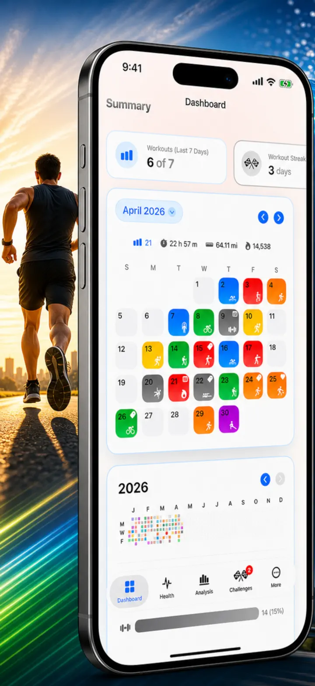
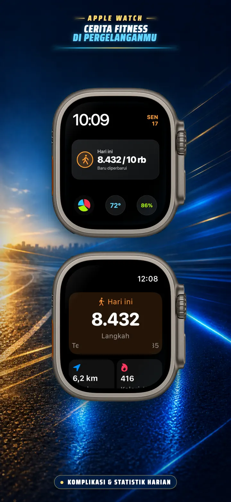
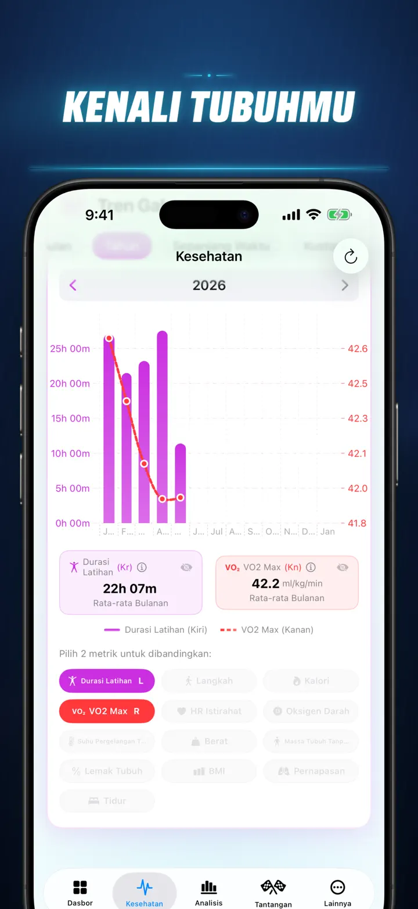
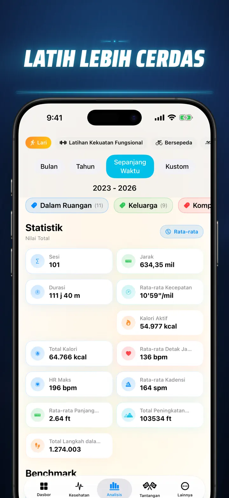
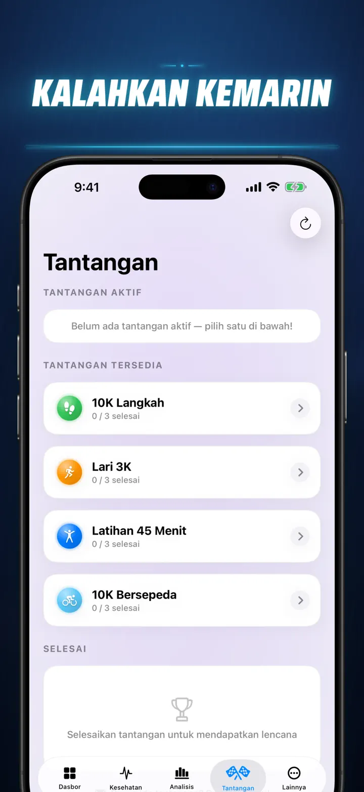
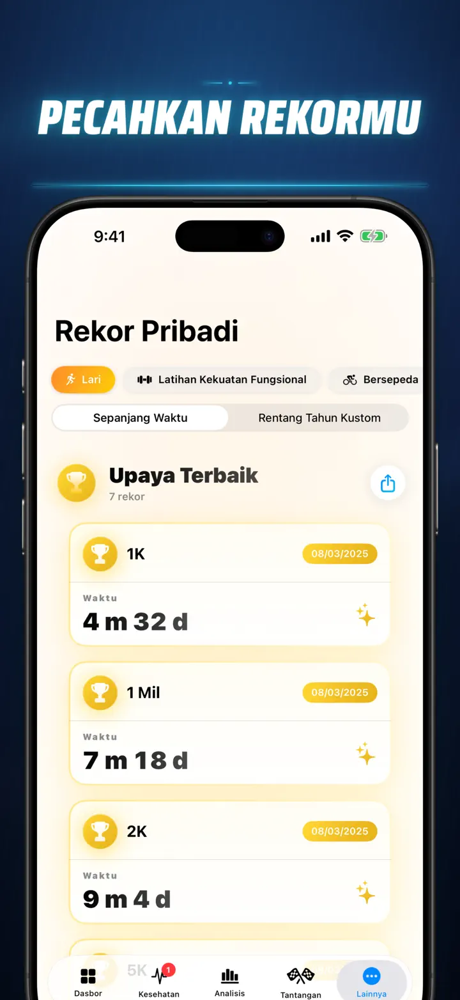
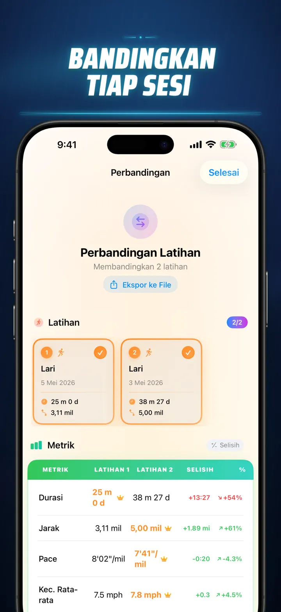
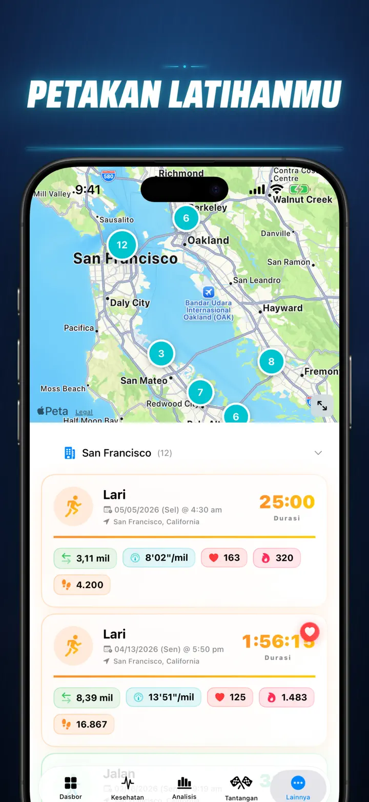
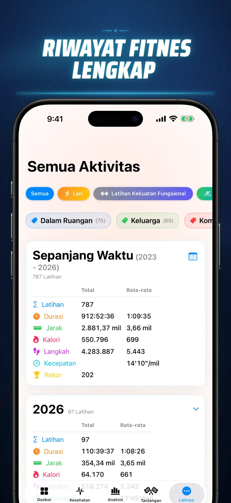

Cerita Fitness
Temukan wawasan latihanmu
Kini di Apple Watch: langkah hari ini di wajah jam mana pun, plus layar Hari Ini berisi jarak, kalori, dan lantai — langsung dari Apple Health.
Unduh di App Store
Tentang aplikasi
Berhenti menebak. Mulai pahami datamu. Cerita Kebugaran mengubah data Apple Health kamu jadi analisis paling lengkap dan detail yang tersedia di iOS. Tanpa akun. Tanpa server. Cuma perjalanan kebugaranmu, divisualisasikan.
Mau tracking tahapan tidur, analisis cadence lari, atau mengejar PR marathon — ini dashboard all-in-one yang layak buat kerja kerasmu.
Berfungsi dengan perangkat atau aplikasi apa pun yang sinkron ke Apple Health — Apple Watch, Garmin, Polar, Suunto, Zwift, dan lainnya.
ANALISIS KELAS PROFESIONAL
- Chart Tren & Benchmark: Gunakan Box-and-Whisker plot untuk melihat median, kuartil, dan outlier di setiap jenis olahraga.
- Breakdown Mendetail: Filter riwayatmu berdasarkan Waktu, Jarak, Durasi, Pace, Elevation gain, Cadence, dan Stride Length.
- Ranking Semua Metrik: Satu ketukan untuk membandingkan metrik hari ini (Jarak, Pace, HR, dll.) dengan seluruh riwayatmu. Langsung tahu kalau performamu masuk "Top 15%".
- Contribution Graph: Heatmap bergaya GitHub dari seluruh riwayat workout-mu. Balik untuk lihat statistik harian yang detail.
DETAIL WORKOUT YANG DIDESAIN ULANG
- Smart Maps: Warnai rute outdoor-mu berdasarkan Kecepatan, Elevasi, atau Zona Detak Jantung. (Termasuk Koreksi Peta China).
- Analisis Split Mendalam: Lihat split per KM atau Mile dengan pace, elevasi, HR, dan cadence untuk setiap lap.
- Zona Detak Jantung: Visualisasikan waktu yang dihabiskan di Zona kustom 1–5 berdasarkan usia dan detak jantung istirahatmu.
- Konteks Lengkap: Tambahkan foto, catatan rich text, rating usaha (1–10), dan tag kustom ke setiap workout.
PUSAT KOMANDO KESEHATAN LENGKAP
- Semua yang diukur Apple Watch-mu, divisualisasikan di satu tempat dengan tren harian, mingguan, dan tahunan:
- Kesehatan Kardio: Detak Jantung Istirahat, VO2 Max (disesuaikan usia), Oksigen Darah, dan Laju Pernapasan.
- Komposisi Tubuh: Berat Badan, % Lemak Tubuh, Massa Tubuh Tanpa Lemak, dan BMI dengan indikator tren.
- Aktivitas & Pemulihan: Langkah (dengan breakdown per jam), Kalori Aktif vs. Basal, dan deviasi Suhu Pergelangan Tangan.
- Tracking Tidur Lanjutan: Tahapan Deep, Core, REM, dan Awake divisualisasikan malam per malam.
- Overlay Korelasi: Tumpuk beberapa metrik kesehatan untuk melihat bagaimana tidurmu memengaruhi detak jantung atau bagaimana berat badanmu berdampak pada VO2 Max-mu.
BANDINGKAN & KOMPETISI
- Perbandingan Workout: Pilih hingga 10 workout untuk dibandingkan side-by-side. Lihat persentase perbedaan (misal, "+1,5% Lebih Cepat") untuk setiap metrik, per split!
- Ekspor Perbandingan: Mau analisis dengan tools data lain? Ekspor perbandingan workout-mu!
- Rekor Pribadi: Tracking otomatis untuk 1K, 5K, 10K, Half, Marathon, dan jarak kustom. Raih trofi Emas, Perak, dan Perunggu.
- Story Timeline: Feed kronologis dari setiap milestone, rekor, dan workout yang pernah kamu selesaikan.
DATAMU, DI MANA SAJA
- Peta Global: Lihat semua tempat yang pernah kamu gunakan untuk olahraga di peta dunia interaktif.
- Ekspor Canggih: Ekspor seluruh riwayat (atau rentang kustom) ke CSV atau JSON. Termasuk data split lengkap, metrik tubuh, dan metadata.
- iCloud Sync: Favorit, tag, catatan, dan rating-mu langsung sinkron di semua perangkatmu.
- Privasi Utama: Tanpa server tersembunyi. Datamu ada di perangkatmu dan di iCloud pribadimu.
- Keringatmu punya cerita. Saatnya membacanya. Download Cerita Kebugaran sekarang.
Download Cerita Kebugaran dan temukan insight-mu!
Privacy Policy: https://masawata.net/privacy-policy.html Terms Of Service: https://www.apple.com/legal/internet-services/itunes/dev/stdeula/
Tangkapan layar








Cerita Fitness
Kini di Apple Watch: langkah hari ini di wajah jam mana pun, plus layar Hari Ini berisi jarak, kalori, dan lantai — langsung dari Apple Health.
Unduh di App Store